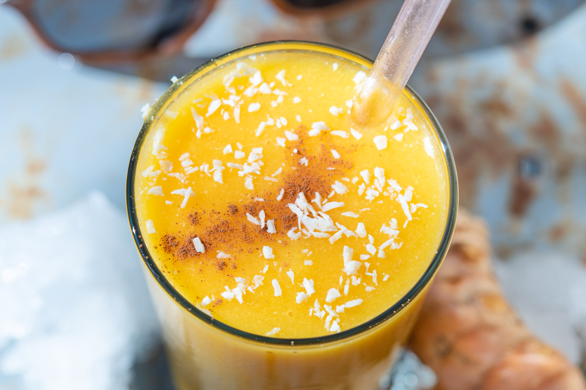

Batido Tropical
de frutas

Tiempo: 5 minutos
Un batido de frutas tropicales que te lleva directo a las islas: dulce, refrescante y lleno de vibras frescas en cada sorbo. Se prepara con una mezcla de papaya, banana/guineo/plátano, piña, mango, y naranja.
Ingredientes para 2 personas
Para esta receta, combina dos tazas de papaya troceada, dos tazas de piña picada, dos bananos en rodajas, y dos mangos maduros en trozos. Añade dos tazas de jugo de naranja fresco, hielo al gusto y, si prefieres, un toque de azúcar o miel.
Elaboración
Para preparar este batido de frutas tropical, comienza pelando la papaya y cortándola en trozos pequeños hasta obtener aproximadamente dos tazas. Luego, corta la piña en cubos hasta completar la misma cantidad. Continúa pelando los bananos y cortándolos en rodajas, y haz lo mismo con los mangos maduros, asegurándote de trocearlos en partes manejables.
Una vez listas todas las frutas, colócalas en una licuadora junto con dos tazas de jugo de naranja fresco. Agrega hielo según tu preferencia para lograr un batido bien frío. Si te gusta más dulce, puedes añadir un poco de azúcar o miel al gusto. Licúa todo hasta que la mezcla quede suave y homogénea. Sirve de inmediato y disfruta de este refrescante batido lleno de sabores tropicales. ¡Disfrútalo!
Batido Detox
de frutas, dátiles y espinacas

Tiempo: 5 minutos
Los dátiles son una opción natural para endulzar el batido sin necesidad de utilizar azúcares refinados. Son una fuente de energía rápida y aportan un sabor dulce y caramelizado. Por otro lado, todas las recetas con espinacas tienen un sabor suave que combina perfectamente con los otros ingredientes sin alterar demasiado el sabor final del batido y aporta a su vez muchas vitaminas, minerales y antioxidantes.
Ingredientes para 2 personas
Para preparar esta receta, necesitarás un plátano maduro, una manzana, y tres dátiles sin hueso. También incluirás medio manojo de hojas de espinaca fresca. Finalmente, tendrás a la mano entre dos y tres vasos de agua mineral para ajustar la consistencia a tu gusto.
Elaboración
Empieza pelando el plátano y la manzana. Corta ambos en trozos pequeños para que se mezclen mejor. Si los dátiles aún tienen hueso, retíralos con cuidado y déjalos listos para usar. Lava bien el medio manojo de espinacas frescas bajo agua corriente, asegurándote de quitar cualquier rastro de tierra o suciedad.
Una vez que tengas todo preparado, coloca los ingredientes en la licuadora: los trozos de plátano, manzana, los dátiles y las hojas de espinaca. Añade dos vasos de agua mineral para facilitar la mezcla y licúa a velocidad alta hasta obtener un batido suave y homogéneo. Si prefieres que la consistencia sea más líquida, puedes añadir un poco más de agua mineral y licuar nuevamente hasta alcanzar la textura deseada.
Cuando esté listo, sirve el batido en un vaso grande o en varios pequeños si quieres compartirlo. Es una bebida refrescante, saludable y perfecta para comenzar el día o recargar energía a cualquier hora. ¡Disfrútalo!